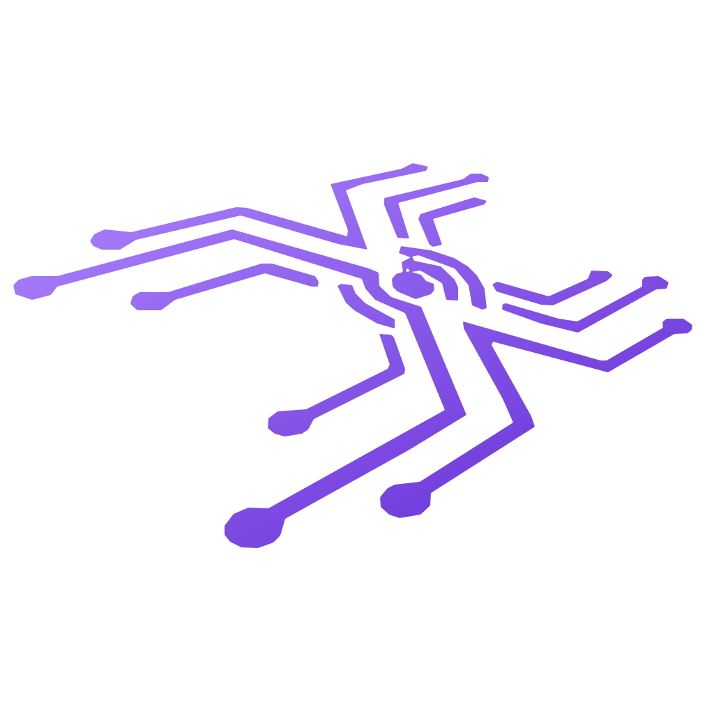
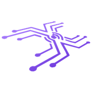

Make room for your day.
A reading queue, a calendar, and a quiet place to browse. Keep what matters nearby and leave the rest out of the way.
Browse. Learn. Create. Compare. Plan. Get things done—your way. TAHAI is being built around how you interact with the web, from one quiet page to a workspace that feels like your own.

Daily Driver Creator Builder Research OpsFor everyone means everyone
It is how you turn an intention into something done. Study for a class. Compare a purchase. Plan a trip. Make something. Coordinate a project. Or simply enjoy the web without the clutter. You do not need to be an engineer to want a browser that works your way.
Your life. Your interests. Your way of getting there.
The direction · everyday possibilities
Operational does not mean complicated. It means the browser should support what you are trying to do. These are examples of the spaces our operational-skin direction is being built toward—not a list of already shipped templates.
A reading queue, a calendar, and a quiet place to browse. Keep what matters nearby and leave the rest out of the way.
Put a lesson beside your notes and practice. Build a space for the way you learn, whether it is for school or just for you.
Bring references, a brief, an editor, and a preview together. Make room for writing, art, video, or your next side project.
Compare a purchase, explore a question, or review your sources side by side. Keep the details close to the decision.
Bring travel ideas, household tasks, or a shared project into one useful space. Your life is not a collection of unrelated tabs.
Connect the context around code, consoles, documentation, and runbooks. Technical work belongs here too—it does not define who belongs here.
Mission Control
A lesson beside your notes. A purchase beside the alternatives. A project beside its references. Mission Control brings multiple live pages into one workspace—without making a wall of separate windows your starting point.
Keep the page you are working in as the target for navigation and commands. Mission Control is designed around a visible active pane, not a separate dashboard layered over your browsing.
Saved workspaces bring tabs, groups, split layouts, and the selected mode back together. They reopen your places on the web; they do not promise to recover unsaved forms or transfer signed-in sessions.
For tasks that need a record, Mission Control brings runbooks, checkpoints, timeline entries, and evidence markers into the workspace. Review what you share and keep private information out of exports.
Inside TAHAI Browser
Mission Control is not a static dashboard. TAHAI can move the same live browser work between a focused command surface, Dual View, Tri View, and signature Quad View without turning the workflow into a pile of separate windows.
Screenshots show the native browser in development and may differ from the installed release, including earlier branding. Tri and Quad View are best enjoyed on a larger display.
Mission setup, layout state, runbook checkpoints, evidence, timeline, and restoreable context stay together—locally and intentionally.
Compare, create, validate, research, or operate side by side while navigation follows the pane you are actually using.
Use three active views when two are not enough and four would be noise. The layout changes; the mission stays intact.
Run multiple live browser surfaces in one native workspace, with a clear active pane and a direct path back to focus.
Adaptive Work Modes
Work Modes organize the browser around an activity. Operational skins are the wider direction: the surface, layout, tools, modes, and workflows you choose to bring together. A mode is part of that operational layer—not a limit on what a skin can become.
Daily Driver Mode
Familiar browsing comes first. Daily Driver keeps the interface calm, with tabs, profiles, and workspace layouts available when they help. Having an operational browser should not turn reading a page into a project.
Creator Mode
Creator Mode is designed for designers, writers, marketers, video teams, and independent creators who build from references while moving between editors, assets, previews, and publishing surfaces.
Builder Mode
Builder Mode surrounds Chromium DevTools with project workspaces, environment awareness, release recipes, documentation, logs, and local-first technical utilities.
Research Mode
Research Mode is designed for comparison, evaluation, deep reading, and documentation—with source queues, linked notes, PDFs, citations, and side-by-side analysis.
Ops Mode
For technical work, Ops brings the focus to Mission Control: live panes, runbook steps, timelines, and local operational context. It is one way to use TAHAI—not the only audience or the required starting point.
Skins are operational. Period.
“Skin is the operational layer for our bodies’ interaction with the external world. Do more than change the look, redefine your operational layer.”
That is the idea behind TAHAI operational skins: not decoration over a fixed browser, but a way to shape how you meet the web.
Native foundation
Electron helped prove the product idea. The active TAHAI source is now a native Chromium browser. Windowing, tabs, profiles, navigation, downloads, and Mission Control are part of the browser foundation—not the former Electron shell.
Windowing, titlebar behavior, tabs, downloads, permissions, shortcuts, mouse navigation, session restore, DevTools, and multi-view routing are being treated as first-class browser systems.
Mission Control is part of the browser model—not a web page pretending to be one.
Saved arrangements keep browser context together. Authenticated sessions stay within their Chromium profiles; a shared design is not a copy of someone’s private browsing state.
Remote pages stay untrusted. Sensitive exports stay deliberate. Privileged boundaries stay narrow.
Published packages and development source have different release states. The official Store listing is the place to get the released Windows package.
What stays true
TAHAI must earn the right to be a daily browser before asking users to care about its flagship systems.
Mission Control, tools, evidence, and policy surfaces stay available without turning ordinary browsing into a cockpit by default.
Modes may recommend. They do not silently rearrange tabs, change identity, move workspaces, or inspect secrets.
Clear release truth, known limitations, open-source review, and supportable behavior matter as much as the visual polish.
Operational skins · product direction
A research desk, a learning space, a comparison workspace, or a creative studio. The goal is one skin you can design around the way you see, arrange, and use the web—with the websites and services you choose.
The current offline creator kit covers the v1 appearance format: supported colors, artwork, and package rules. It is a starting point, not the completed operational-skin editor or workflow engine.
Check your browser version for compatible skin support. Expanded operational-skin capabilities are planned.
Appearance, layout, modes, and workflows belong in the same creative process. Behind that experience, permissions stay separate: installing a skin must never silently authorize website actions or access to private data.
Explore the operational modelThe creator experience we are building toward
In development
Follow the native source for the next pieces of the TAHAI workflow. Development features are not a promise that every capability is already in your Store package.
Native request-blocking development focuses on visible controls and per-site choices. The goal is built-in protection that remains understandable when a site needs an exception.
Coverage is evolving. No claim of complete ad blocking or parity with another browser.
Follow the native source ↗TAHAI’s Local OI direction brings local search, evidence, knowledge gaps, and operational context closer to the browser workspace. It is distinct from hosted Operational Intelligence and its account-based services.
This is not a claim of live cloud connectors, automatic uploads, or bundled access to hosted TAHAI products.
Explore TAHAI Web Services ↗Get TAHAI Browser
The official Microsoft Store listing is the download route for the published Windows release. The public repository is where native Chromium development moves forward.
Source changes, screenshots, and local MSIX builds can be ahead of the published package. Check the release information for the version you install.
The official Windows listing
Active browser development
Source kit and starter package
Useful to know
No. TAHAI is for everyday browsing, learning, creating, comparing, planning, building, and technical operations. “Operational” describes a browser that supports what you are doing—not a job title, a business account, or a level of technical expertise.
No—that is not the product direction. TAHAI skins are being developed as operational layers that can bring appearance, layout, modes, tools, and workflows together. The current v1 creator kit is the appearance foundation; the expanded operational format and editor are planned work.
A Work Mode organizes a particular activity. The operational-skin direction lets creators bring modes together with the visual surface, workspace arrangement, and workflows. These are complementary parts of one experience, not “skins for looks” versus “modes for work.”
It must not. The operational-skin design keeps appearance and layout separate from permissions. Sensitive reading, sending, publishing, or other external actions need explicit, scoped authorization. Normal websites keep their own sign-in and permission boundaries.
It describes who TAHAI is for. The installation route promoted here is the Windows Microsoft Store listing. It is not a claim that native macOS, Linux, Android, or iOS releases are currently available.
No. The site labels product direction and development work separately from the current creator resources. Check the release information for your installed version. A source commit, screenshot, or website update is not proof that a new browser package has shipped.
The active TAHAI development foundation is native Chromium, not the former Electron shell.
Use GitHub Issues for bugs and suggestions. Tell us what you were trying to do. For a bug, include your browser version and reproduction steps, but leave out credentials and private information.

TAHAI Browser
Your web. Your way. Start with the published Windows release.